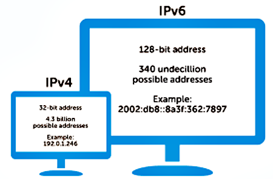

Online 101 Unit
What is the Internet?
A Closer Look At Fiber
- These days fiber connections are built by MANY really rich people/companies who are going to make a profit from establishing fast connections (like Google or Verizon). Also, governments that will benefit from speeding up connections.

A Closer Look At Fiber
Check out this underwater map!
Lifi
Click for more!
Review
Page 81 in DLH
The Web

Clients
Clients are the computer that access the web in any way.

What's different across these devices?
Browsers
A software application for retrieving, presenting, and traversing information resources on the World Wide Web. An information resource is identified by a Uniform Resource Identifier (URI/URL) and may be a web page, image, video or other piece of content. Hyperlinks present in resources enable users easily to navigate their browsers to related resources.

Browsers
Various companies and organizations provide browsers, and each browser varies in how it displays webpages.

Current Browser Versions
Browser Usage
Browser popularity varies year by year. Developers must decide which browsers they want their webpage to work well in. Current Browser Stats

Chrome
Chrome has a lot of great features (and it is the only browser not to be hacked!)
- Extensions
- Developer Tools
- Preferences
- Synced with G Suite
- Incognito
Chrome Extensions
Extensions are small software programs that customize the browsing experience. They enable users to tailor Chrome functionality and behavior to individual needs or preferences.
Google "Chrome Web Store"
- Harvest
- ColorZilla
- Loom
Chrome Preferences
- Bookmarks: Bookmarks allow you to store pages that you go to often. When you want to save a page, click Bookmarks, and then "Bookmark This Page". You can drag them around to your preferred order.
- Preferences Tab: Go to Chrome -> Preferences. This section allows you to customize your browser.
Chrome Incognito
Go to File -> New Incognito Window
- Chrome doesn't save your browsing history or information entered in forms.
- Cookies and site data are remembered while you're browsing, but deleted when you exit Incognito mode.
- Chrome won’t remember the files you download while browsing in private. But, they're still saved to your Downloads folder, even after you exit Incognito.
- Google still tracks yo shit!

Chrome Incognito
Why use incognito?
- Shopping
- Travel
- Other?
Review
Go through page 82 in DLH
Desktop App, Mobile App, Web App
Desktop Apps and Mobile Apps have to be downloaded to devices (phones or computers) and Web Apps are accessed through a browser.
Browser ---> Server
What happens when we type a URL into the address bar and press 'return'?

Servers
- Servers are just programs running on a computer that serve up content.
- Sometimes they serve up static files, and are exposed like a file system.
- Sometimes they can be scripted using "server-side" programming languages (PHP, Python, Perl, Java, etc.) to serve more dynamic pages.
- Check out this video
Google Data Centers
Step inside a Google Data Center
How does Search work?

More about the Internet
Finding my IP Address
Go to www.whatsmyip.org
Remember!
There is no “GOOGLE.com” that information can travel to. All addresses inside the Internet are actually combinations of numbers, rather than names.
It’s kind of like your telephone. You may call someone by selecting “Grandma’s Cell” from your address book, but underneath, it’s really dialing a ten-digit number.
Let's look at some IP addresses
There are so many new devices on the planet, we are now moving to IPv6!
Review
Page 84 in DLH
Packets and Routing
Watch here!Traveling to England
More on PacketsUnderstanding the Route
Using traceroute in your Terminal
Enter traceroute anniecannons.com into your Terminal.
You will see all the routers that your packets hit as they traveled to the server hosting the AnnieCannons website.
Understanding TCP/IP

Layers and Layers!
| TCP/IP Model | TCP/IP Protocols |
|---|---|
| Application Gets/Sends Data | HTTP |
| Transport the Data | TCP |
| Find The Location On The Internet | IP |
| Network Access | WiFi/Ethernet |
Headers
The magic of the internet
Using the developer tools --> Network tab
Headers show you where your request was sent, what the status of the request is, and what the response was.
Three-Way Handshake

SYN stands for Synchronize and ACK stands for Acknowledge. This is how a browser and server recognize each other and establish whether or not they can send each other information.
What the computers are really doing...

Transporting Data Securely
- TLS: Transport Layer Security (TLS) and its predecessor, Secure Sockets Layer (SSL), both frequently referred to as "SSL", are cryptographic protocols that provide communications security over a computer network.


TLS Exercise

HTTP and HTML
How information really travels on the Internet
Watch hereWhat is an ISP (Internet Service Provider)?
An ISP is a company that provides Internet access for customers. Your computer connects to the Internet Service Provider (ISP), then to the Internet

Understanding My URL

This part of the URL lets you know what protocol is being used. Is it HTTP, HTTPS, or a file? Are you making a request over the Internet or loading something locally from your computer?
Understanding My URL

This part of the URL is the domain name and is what the browser uses to find the IP address of the site.
Understanding My URL

This part of the URL contains all of the possible folders and (eventually) the file that the user wants to see.
Understanding My URL

This part of the URL shows the folders and how they are nested on a server (for a particular file).
Understanding My URL

This part of the URL is the actual file that the user wants to see.
Worksheets in your handbook
- Vocabulary Worksheet: Page 87-77 in DLH
Key Terms on the Web
Review Exercise
Cybersecurity and Safety
Bad things happen sometimes..
- Malware: trojans, viruses, worms, rootkits, spyware, adware
- Trickery: phishing, spoofing
- Slowness or Blue Screen of Death (BSOD)
- Losing data [dead hard drive, corrupt files]
- Cyberbullying/Stalking
Viruses
A virus is malicious code that hides in another file. It requires user action (opening a file) to execute and spread.
Actual damage can be caused varies by virus. Today, most viruses attempt to take control of your computer to do tasks designated by the virus author. Owners of these "botnets" often sell your computer's resources to do a variety of illicit activities
Online Safety Information
Resources here
Staying Safe Online
Code WarsCybersecurity
Cybersecurity 101Cybersecurity
The Secret Lives of HackersWhat is Encryption?
Watch here.Hacking Passwords
There are MANY methods - so keep your passwords safe and long! For now, a few examples:
- Write a program that tries every combination of letters and numbers.
- Use a “key logger,” wait until you type your password, and then try it (or try every thing you typed WAY faster than you typed it)
- Hijack the “autocomplete” feature on your own computer (like tell it to autocomplete when you didn’t) - sometimes it’s stored your password from a less secure site.
Test Your Skills
Click here
Prevention
- Anti-Virus Software: Avast, Avira, Avg, Sophos, etc.
- Leave at least 15% or more of your hard drive free (you can use free tools like Dropbox as well)
- Backup your hard drive on a regular basis!!!
- NEVER open suspicious email
- Super, awesome passwords
Review
Online 101
Review Material found here
THE END
Thank you for your attention!